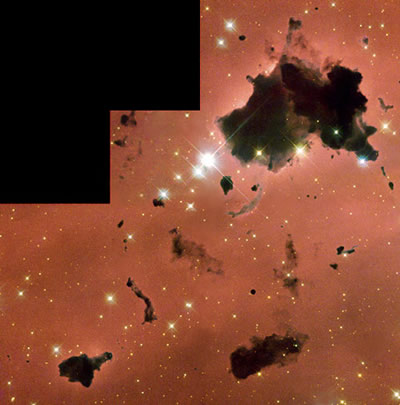

Credit: NASA and The Hubble Heritage Team (STScI/AURA)
Bok Globules are very compact, isolated molecular clouds named for the astronomer Bart Bok who first suggested they may be the precursors to protostars. This theory has been supported by recent observations of Bok globules which revealed both the inflow and outflow of material, a process common in the development of a protostar.
They are the smallest manifestations of dark nebulae with sizes less than 3 light years across, and are most easily visible when silhouetted in front of emission nebulae or reflection nebulae. Though upper limits are difficult to decide, they generally contain between 0.1 and 2000 solar masses of gas and dust (above this they are simply known as dark nebulae), and form isolated stars, not massive star clusters. Bok Globules typically have temperatures of around 10 Kelvin.